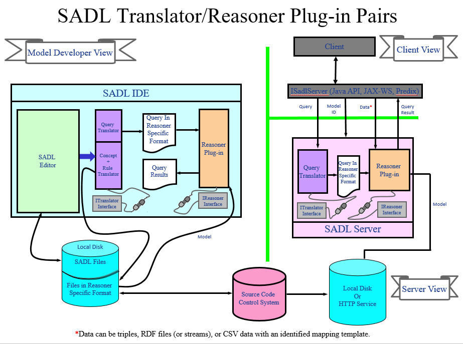

The SADL IDE is architected to allow a variety of reasoners to be used. Each reasoner must be wrapped in Java code implementing the IReasoner Java Interface class so that it can be invoked from the IDE or from SadlServer. In the SADL IDE, each reasoner must also have an associated translator capable of translating rules and queries from the SADL Intermediate Form, generated from the SADL grammar, to a form compatible with the reasoner. The translator must be wrapped in Java code implementing the ITranslator Java Interface class. This plug-in architecture is illustrated in the diagram below.
The presence of multiple reasoner/translator pairs implies that a selection is possible. In the Eclipse-based IDE, this selection process is accessed through the project properties.
For more information and illustrations, see Preferences (and Project Properties).